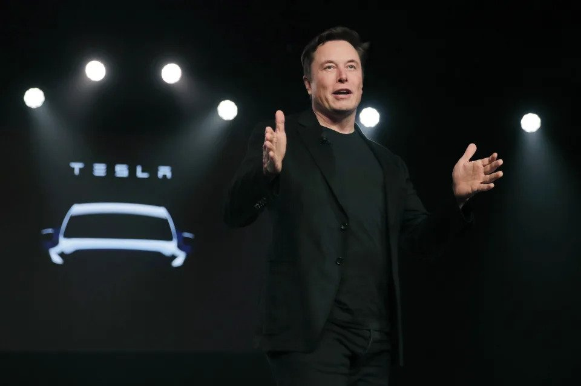

Tesla sued Sweden’s transportation agency and postal service on Monday over a union strike blocking the company’s license plate deliveries in the country. The workers are striking to demand the non-unionized automaker sign a collective bargaining agreement, a standard practice that mechanics’ union IF Metall describes as “the backbone of the Swedish model.” However, the Swedish Transport Agency says it already received an interim decision from a district court ordering it to consent within seven days to Tesla’s request to collect license plates or face hefty fines. The agency says it’s too early to say what exactly that means for the standoff.
The Associated Press reported Monday that Tesla, which delivered over 9,000 EVs to Swedish customers in 2022, described the actions of The Swedish Transport Agency (Transportstyrelsen) as a “unique attack” on the US company. Tesla’s lawsuit reportedly urges a district court to fine the Swedish Transport Agency 1 million kronor (US$95,803) while allowing Tesla to “retrieve license plates.” The registrations are held up because workers at state-owned postal service PostNord stopped supplying the plates to Tesla after its workers joined the strike.
The lawsuit allegedly claims the Swedish Transport Agency refused the automaker’s request to pick up the license plates itself or, failing that, send them through a different channel. Reuters reports Tesla filed two lawsuits: one against the Swedish Transport Agency and another against PostNord.
In a statement to Engadget, Swedish Transport Agency spokesperson Ann-Sofie Masth confirmed the lawsuit and revealed the court’s interim decision. “The Swedish Transport Agency has now received an interim decision from the Norrköping district court to consent within 7 days to Tesla collecting license plates directly from our sign manufacturer. It appears from the decision that our sign manufacturer has announced that it is prepared to provide the signs directly to Tesla, provided that the Swedish Transport Agency agrees to this. We at the Swedish Transport Agency now need to analyze the announcement and assess what consequences this has for us and what measures might need to be taken to implement the decision. It is currently too early to say exactly what that would mean.”
Tesla, not exactly a union-friendly company, has a policy against signing collective bargaining agreements, claiming its employees already have equal or better terms than what the union proposed. The argument that it takes good enough care of its employees to void the need for a union echoes one Tesla CEO Elon Musk made in 2017 when accused of allegations of poor working conditions and low pay at the company’s Fremont, CA factory.
IF Metall, Sweden’s most prominent manufacturing union, began striking on October 27. Although Tesla doesn’t have a manufacturing plant in the country, it has several service centers, which stopped working on Tesla vehicles after going on strike. Other unions in the Nordic nation, including dockworkers, cleaners and electricians, have joined the strike in an act of unity. A component maker joined the unions on Friday in a sympathy action.